1
Client review overview
/client-review- Shows the product in a short, shareable format.
- Captures reactions without requiring sign-up.
- Best link for quick outside feedback.
KAI client review - June 15, 2026 - 60 minutes
This walkthrough shows what Boost AI has built for KAI, what Lev and Offy need to review, what is still gated by client decisions, and how we separate final development closeout from new scope and go-to-market ownership.
The live version is the review quest at https://kai.boostaisearch.ai/client-review, with the meeting deck at /meeting-deck. Use this HTML as an offline backup.
Run of show
This is an acceptance meeting, not a feature brainstorm. Keep the walkthrough moving and capture every new idea as either a bug, included closeout item, or change request.
What to open
Use the live walkthrough for the story, gate check, and sign-off flow; then click into real app pages for acceptance. The client should leave knowing exactly what to test after the call.
Clickable presentation
This is the visual walkthrough to share before the call or use live in the meeting. Click any preview to open the real app route. The live review quest with progress tracking is at https://kai.boostaisearch.ai/client-review.
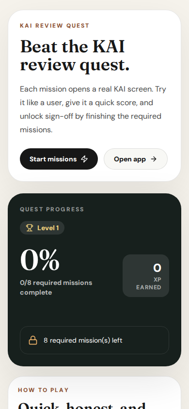
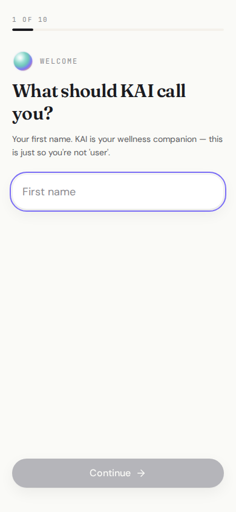
OnboardingPersonalizes KAI around focus, tone, and goals.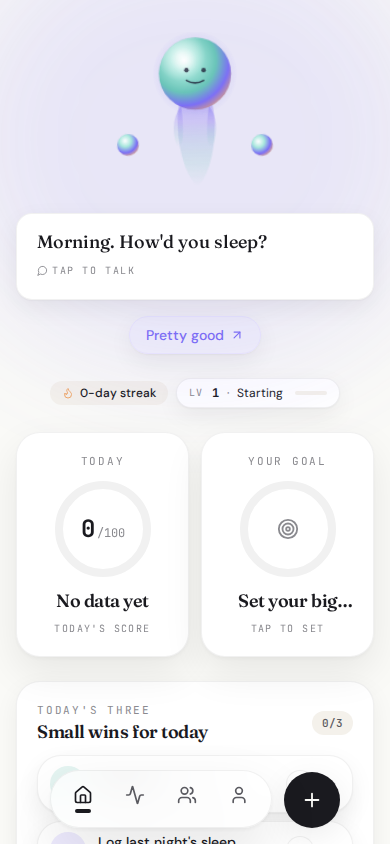
HomeDaily score, North Star, missions, and activity.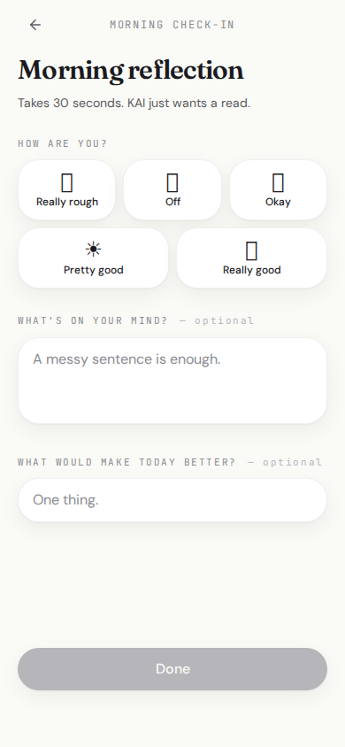
Check-inMorning/evening reflection and one next move.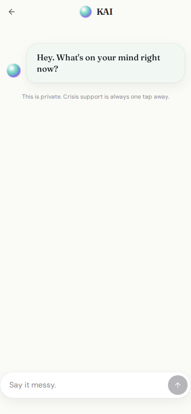
KAI chatShort teen-coach responses with safety routing.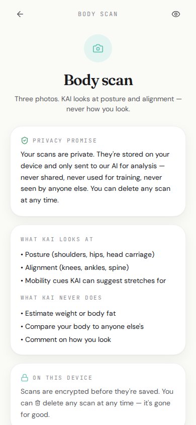
Body scanPosture-only scan flow with safety gate.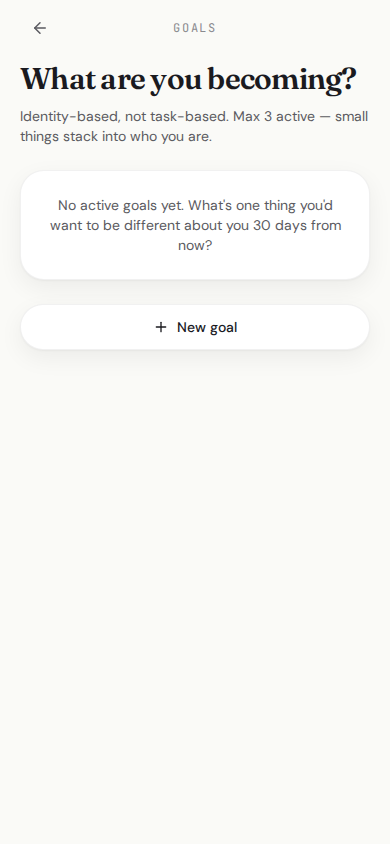
GoalsGoal creation, next step, and reframe loop.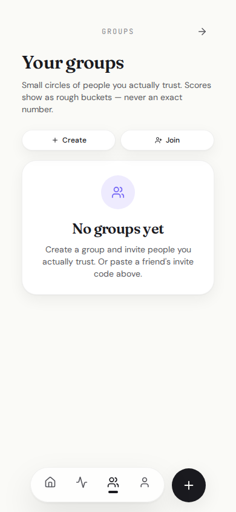
GroupsOpt-in social layer and privacy boundaries.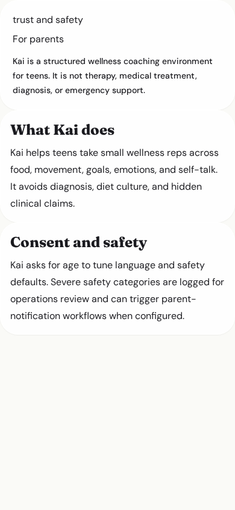
ParentsParent-facing safety explanation.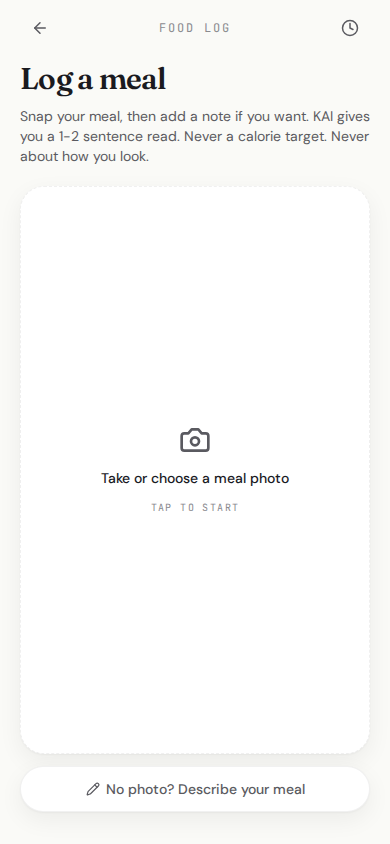
FoodFuel notes without calorie or diet pressure.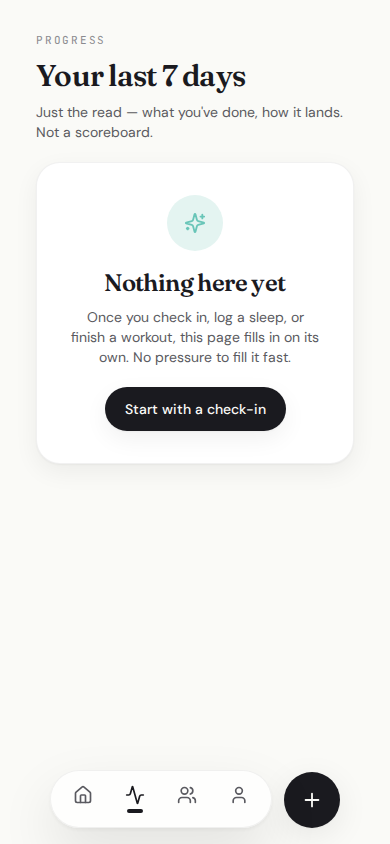
ProgressMomentum, streaks, badges, and history.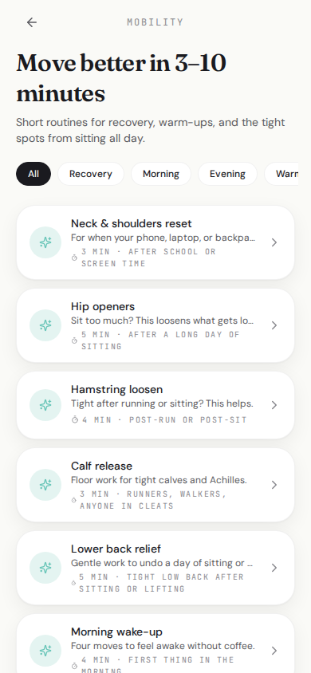
MobilityShort recovery routines and timers.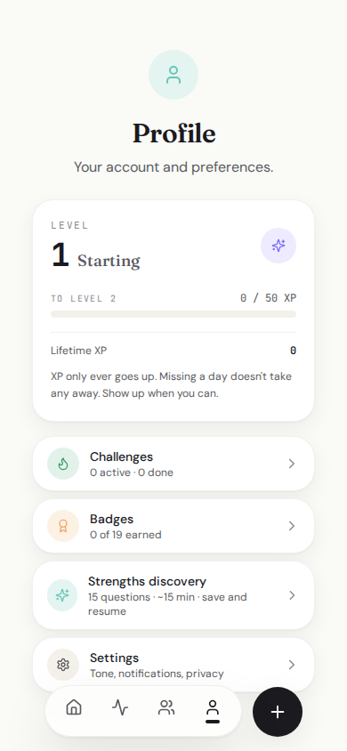
ProfilePersonal profile and app identity.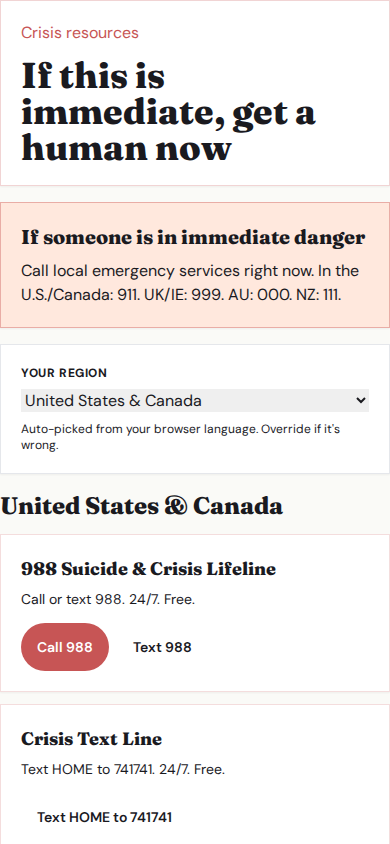
CrisisAlways reachable support resources.Delivery evidence
These are the product surfaces and infrastructure areas the client should review and sign off on.
Cloudflare-hosted app, review access, live app routes, and live walkthrough.
Welcome flow, focus areas, tone selection, goal setup, and personalized entry.
Chat, voice direction, safety-first routing, and teen-coach response style.
Check-in, journal, sleep, workout, food, energy, mobility, and progress inputs.
Daily score, XP, streaks, badges, missions, challenges, North Star, and goals.
Capture flow, privacy promise, analysis path, history, and highest-risk review gate.
Groups, inbox, leaderboard concepts, activity feed direction, privacy boundaries.
Crisis route, parent page, safety event architecture, ops surfaces, Terms and Privacy drafts.
QA docs, scope docs, status docs, build spec, deployment scripts, and invoice artifact.
Original gating document
The original gating document says the $15,000 fixed-fee build is paid across six gates. This separates what has been built from what still requires client sign-off, clinical/legal review, or real-user testing.
| Gate | Original scope | Confirmation | Status |
|---|---|---|---|
| G1 $3,500 |
Deposit; triggers Phase 1 Foundations & Kai. | Completed. Repo, app shell, Cloudflare baseline, review materials, and first working scaffold exist. | Complete |
| G2 $1,500 |
Kai live, customization, progress tracker, onboarding end-to-end, guidance for engine customization. | Substantially complete: onboarding, KAI tone/chat, daily score/progress, crisis resources, safety classifier, and docs. | Ready to review |
| G3 $2,500 |
Physical Wellness: nutrition/food-photo, exercise, sleep, breathing, yoga, stretching. | Substantially complete: food, workout, sleep, mobility/stretching, hydration/energy, body comments, and progress inputs. | Ready to review |
| G4 $2,500 |
Potential & Goals: hidden strengths, goal-setting, check-ins, encouragement system. | Substantially complete: strengths, goals, North Star, check-ins, badges, missions, challenges, and progress/gamification. | Ready to review |
| G5 $2,500 |
Mental Wellness: hardened safety layer, social/emotion/nervous-system modules, breathing/meditation, third-party reviewer approved. | Engineering is partially to substantially complete, but final gate sign-off requires third-party clinical/safety review and Lev testing. | Blocked |
| G6 $2,500 |
Final QA, integration testing, 15-20 teen testers, critical bugs resolved, accessibility pass, handoff docs. | Docs, review walkthrough, build checks, and review assets exist. Final sign-off requires real-user testing and final bug/accessibility pass. | Blocked |
Required sign-off
New feature requests should wait until this testing evidence exists. The point is to learn whether the current app works for the intended user.
| Test | Required evidence | Status |
|---|---|---|
| First-run onboarding | Screen recording or written notes on each step. | Client owed |
| 3 normal KAI chats | Prompt, answer, and 1-5 rating for each response. | Client owed |
| 5 daily actions | Use check-in, journal, sleep, workout, food, mobility, or energy. | Client owed |
| 1 goal loop | Create a goal, add next step, then reframe or complete it. | Client owed |
| 1 scan review | Phone test plus written reaction to privacy and safety framing. | Client owed |
| Friend-test walkthrough | Ask 3 trusted peers to use the live walkthrough and core app flows, then capture exact reactions. | Client owed |
Scope and invoice
Invoice 2026-002 covers the KAI Next Steps Sprint. During the meeting, keep a clean line between bugs in current scope, included closeout work, and new business or product expansion.
If something breaks during the test plan, we fix it. If something new is requested, we scope it.
Walk, jog, run
Close the loop
| Decision | Owner | Why it matters |
|---|---|---|
| Clinical/safety reviewer | Offy | Blocks sensitive mental and body-scan confidence. |
| Legal reviewer | Offy | Blocks responsible external beta. |
| Safety alert recipient | Offy + Boost AI | Required for production operations. |
| Testing owner and deadline | Lev | Prevents continued feature expansion without use evidence. |
| Change-request process | Offy + Boost AI | Protects scope and invoice boundary. |
| Go-to-market owner | Offy + Lev | Keeps business launch separate from development delivery. |
The next step is not "what else can we add?" The next step is "does the product we built solve the first problem for real teens?"